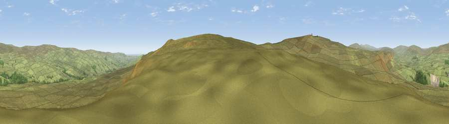

Viewpoint near Newbiggin
#14785 in England · top 41% of its area beats it · near NewbigginWhere it is
The exact computed spot (NY 87675 26175). Click the marker for map links.
The view, rendered

A 360° render of this exact spot computed from the terrain model, tree cover and land cover — summer colours, afternoon light, calibrated against photographs of famous viewpoints. Real trees, hedges and buildings will differ in detail.
The panorama
Grey silhouette: terrain skyline in each direction (720 bearings, Earth curvature and refraction included). Dashed green: skyline with trees (+15 m) and buildings (+8 m) as obstacles. Blue strip: how far the ground is visible on each bearing.
Where the view opens
Wedge length = distance to the farthest visible ground on that bearing (vegetation-aware). Rings at 10, 25 and 50 km.
What fills the view
98% grassland · 2% woodland
Angular shares of the visible panorama (visual magnitude), not map area. Landscape diversity 0.05 (0–1 Shannon).
Key numbers
More beautiful places nearby
The staircase of upgrades: each row has a higher view potential than everything closer. Driving times are estimates from straight-line distance, calibrated against real road routing — check an actual route before setting out.
| Place | Direction | Drive | Score |
|---|---|---|---|
| Millstone How Hill | SE · 1 km | ~3 min | 61.5 |
| Viewpoint near Newbiggin | S · 2 km | ~5 min | 66.7 |
| Viewpoint c10501_7697 | WSW · 3 km | ~7 min | 70.9 |
| Viewpoint c10490_7651 | WSW · 5 km | ~12 min | 74.4 |
| Mickle Fell | WSW · 7 km | ~15 min | 75.8 |
| Viewpoint near Eggleston | E · 14 km | ~25 min | 76.0 |
| Great Dun Fell | WNW · 18 km | ~31 min | 77.8 |
| Little Dun Fell | WNW · 19 km | ~32 min | 78.4 |
54.63055, -2.19243 · source: screening · position refined by local search. Computed location — check access rights before visiting.